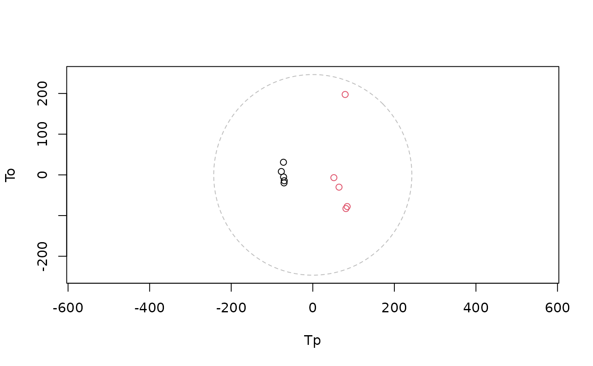
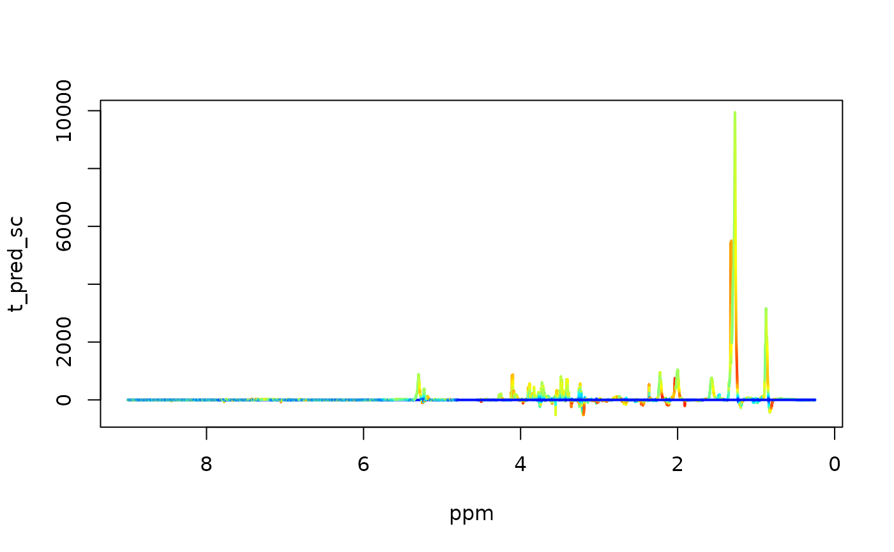

Fits a supervised Orthogonal Partial Least Squares (O-PLS) model using a NIPALS-based algorithm with optional cross-validation and automatic component selection.
Arguments
- X
Numeric matrix of predictors (rows = samples, columns = variables).
- Y
Numeric matrix or factor vector of responses.
- scaling
A scaling strategy object (e.g.,
uv_scaling(center = TRUE)), specifying model-internal centering and/or scaling applied during fitting. This does not modify the original spectral matrix.- validation_strategy
A cross-validation strategy object defining how resampling is performed (e.g., k-fold, Monte Carlo).
Value
An object of class m8_model containing the fitted O-PLS model,
cross-validation results, and performance statistics.
Details
O-PLS decomposes the predictor matrix into:
One predictive component capturing variation correlated with
YOrthogonal components capturing structured variation in
Xunrelated toY
Predictive and orthogonal components are estimated sequentially.
Cross-validated performance metrics (e.g., Q², R², classification AUC)
are computed for each model configuration according to the supplied
validation_strategy.
The model extracts a single predictive component and iteratively
adds orthogonal components until the stopRule indicates
overfitting or maxPCo is reached.
Scaling specified via scaling is applied internally during model
fitting and does not alter the input matrix X. Spectral preprocessing
(e.g., alignment or baseline correction) should be performed prior to
model fitting.
The returned model object stores:
Predictive and orthogonal component models
Cross-validation results
Performance metrics (R², Q², AUC)
Model control parameters
Input data provenance metadata
Session information for reproducibility
Examples
data(covid)
cv <- balanced_mc(k=5, split=2/3)
scaling <- uv_scaling(center=TRUE)
model <-opls(X=covid$X, Y=covid$an$type, scaling, cv)
#> Performing discriminant analysis.
#> An O-PLS-DA model with 1 predictive and 1 orthogonal components was fitted.
show(model)
#>
#> m8_model <opls>
#> ----------------------------------------
#> Dimensions : 10 samples x 27819 variables
#> Mode : classification
#> Preprocess : center | UV
#> Components : 2 (3 tested)
#> Validation : BalancedMonteCarlo (k = 5)
#> Stop rule : cv_improvement_negligible
#> ----------------------------------------
#> Use summary() for performance metrics.
#>
summary(model)
#> $perf
#> comp_total comp_pred comp_orth AUCt AUCv R2X selected fit
#> 1 2 1 1 1 1 0.2860832 TRUE fitted
#> 2 3 1 2 1 1 NA FALSE not fitted
#> stop_reason stop_metric stop_delta
#> 1 <NA> NA NA
#> 2 cv_improvement_negligible 1 0
#>
#> $engine
#> [1] "opls"
#>
#> $y_type
#> [1] "DA"
#>
# scores
Tp <- scores(model)
To <- scores(model, orth=TRUE)
t2 <- hotellingsT2(cbind(Tp, To))
ell <-ellipse2d(t2)
plot(Tp, To, asp = 1,
col = as.factor(covid$an$type),
xlim = range(c(Tp, ell$x)),
ylim = range(c(To, ell$y))
)
lines(ell$x, ell$y, col = "grey", lty=2)

# loadings & vip's
Pp <- loadings(model)
Po <- loadings(model, orth=TRUE)
vips <- vip(model)
x=covid$ppm
y = Pp * apply(covid$X, 2, sd)
palette <- colorRampPalette(c("blue", "cyan", "yellow", "red"))(100)
idx <- cut(vips, breaks = 100, labels = FALSE)
plot(x, y, type = "n", xlim = rev(range(x)), xlab='ppm', ylab='t_pred_sc')
for (i in seq_len(length(x) - 1)) {
segments(x[i], y[i], x[i+1], y[i+1], col = palette[idx[i]], lwd = 2)
}
